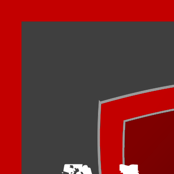
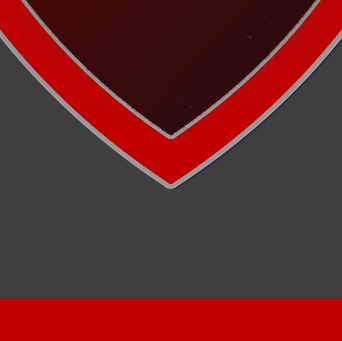

<ion-app>
  <div *ngIf="showSplash" class="splash">
    <!--div class="spinner"-->
        <div class="sk-cube-grid">
            <div class="sk-cube sk-cube1"></div>
            <div class="sk-cube sk-cube2"></div>
            <div class="sk-cube sk-cube3"></div>
            <div class="sk-cube sk-cube4"></div>
            <div class="sk-cube sk-cube5"></div>
            <div class="sk-cube sk-cube6"></div>
            <div class="sk-cube sk-cube7"></div>
            <div class="sk-cube sk-cube8"></div>
            <div class="sk-cube sk-cube9"></div>
          </div>
    </div>
  <!--/div-->
  
  <ion-router-outlet></ion-router-outlet>
</ion-app>
